Театр
отсутствия
Световая концепция выставки «Театр отсутствия» и новой постоянной экспозиции «Вадим Сидур. Карта мифа».
- Роль
- Световая концепция / подбор оборудования / реализация
- Статус
- Реализованный проект
- Автор
- Оксана Никитина / Анна Золотилина
О проекте
Световая концепция выставки «Театр отсутствия» и новой постоянной экспозиции «Вадим Сидур. Карта мифа».
Свет становится инструментом экспозиционной драматургии: выделяет произведения, формирует тени и направляет движение зрителя, одновременно учитывая требования к сохранности экспонатов.
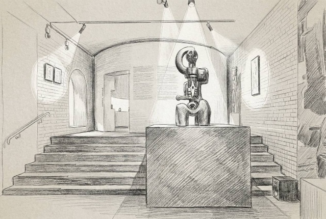
Свет проявляет присутствие через тень
Для выставки «Театр отсутствия» ключевыми становятся театральные тени от восковых скульптур, узкие световые пятна и разные цветовые температуры в зависимости от характера экспоната.
В экспозиции «Карта мифа» овальные световые пятна точно собирают внимание на произведениях. Свет не должен слепить зрителя и не превышает допустимый уровень освещённости для светочувствительных работ.
Разработка
световых эффектов
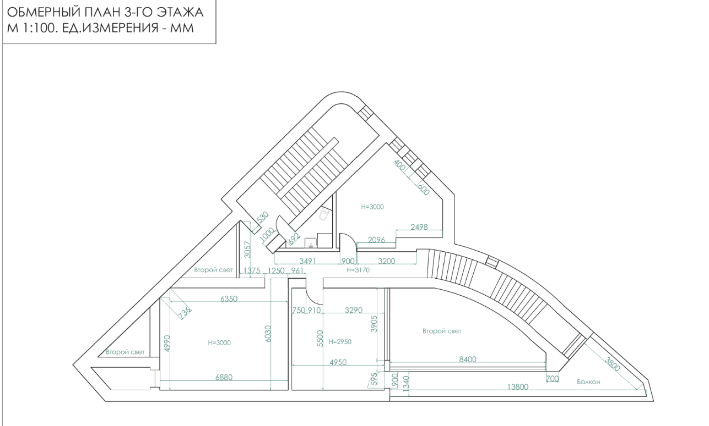
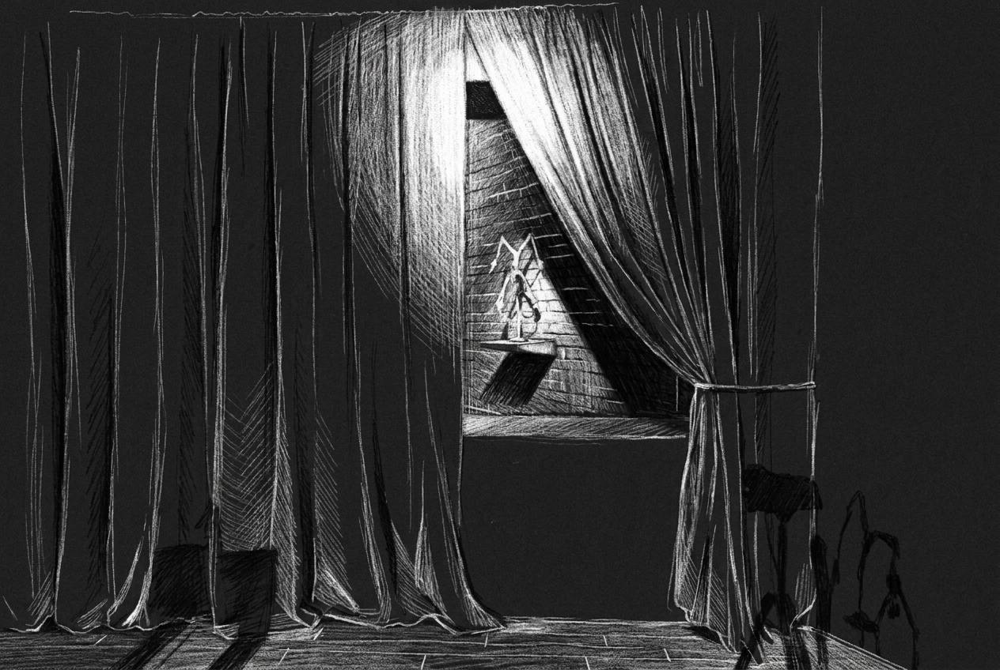
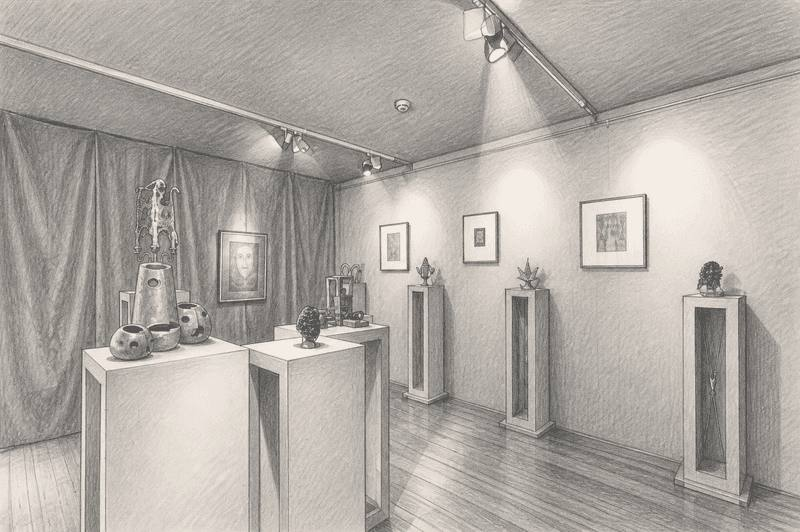
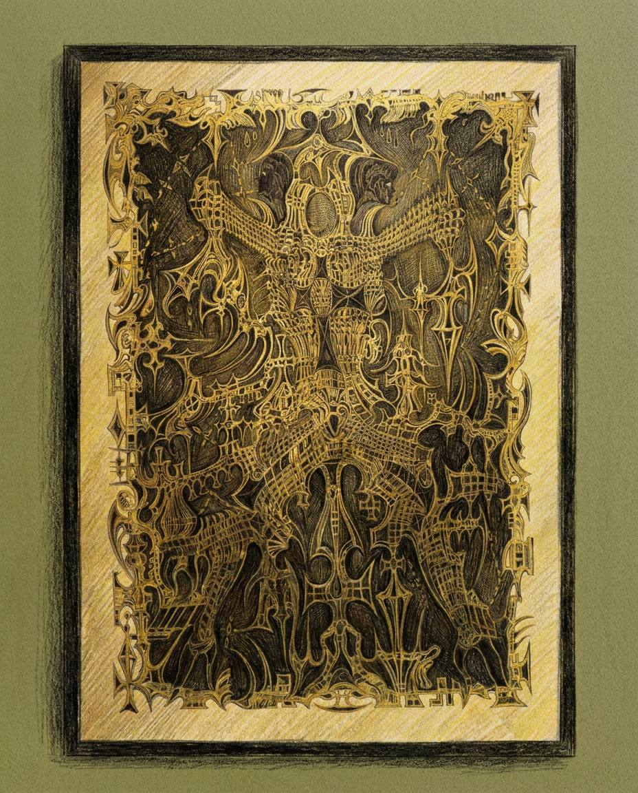
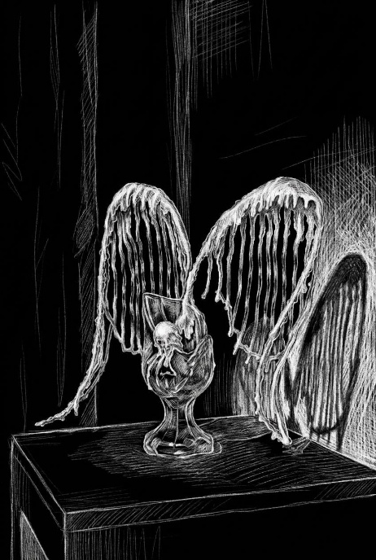
Экспозиция
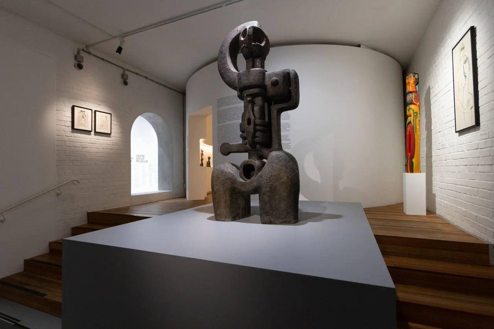
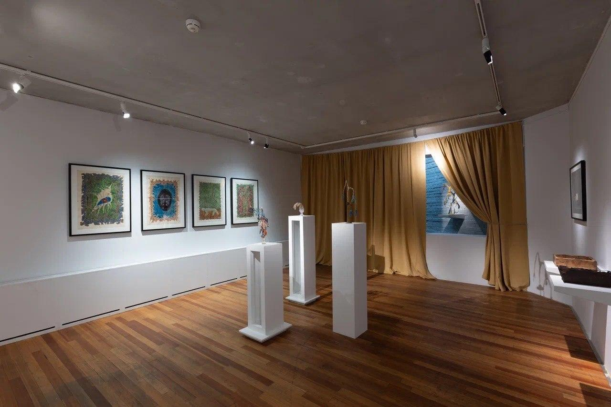
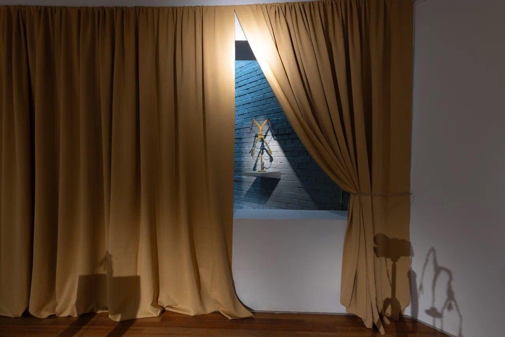
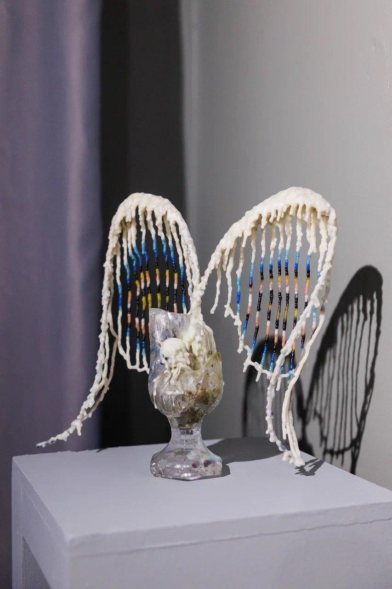
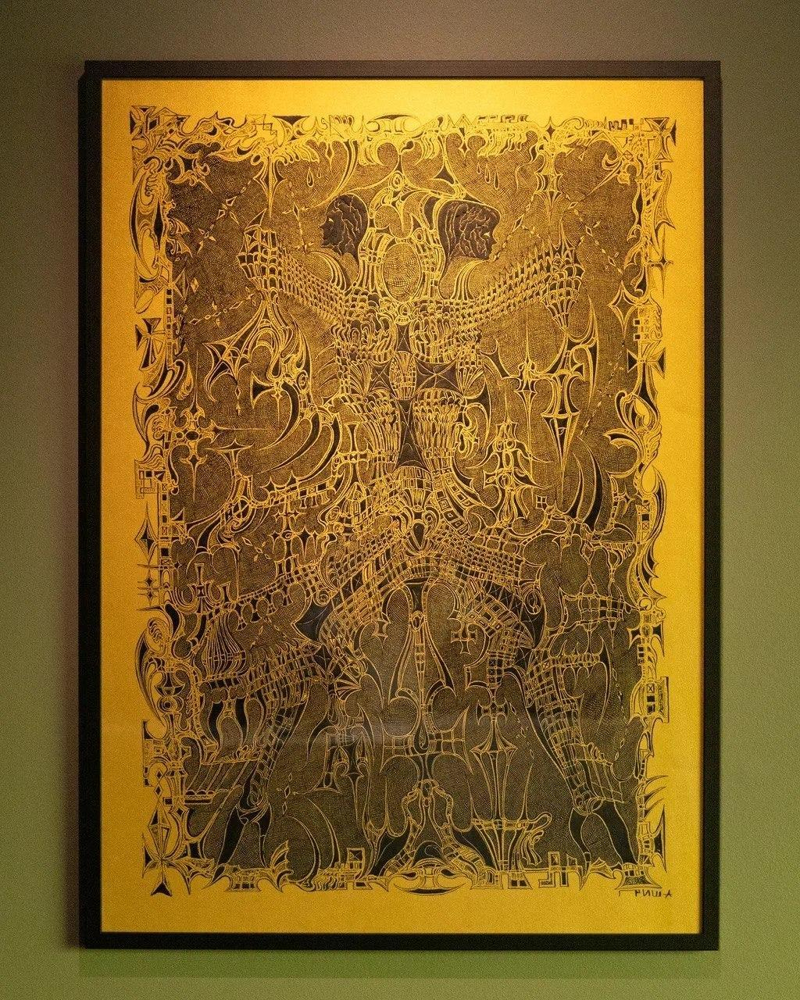
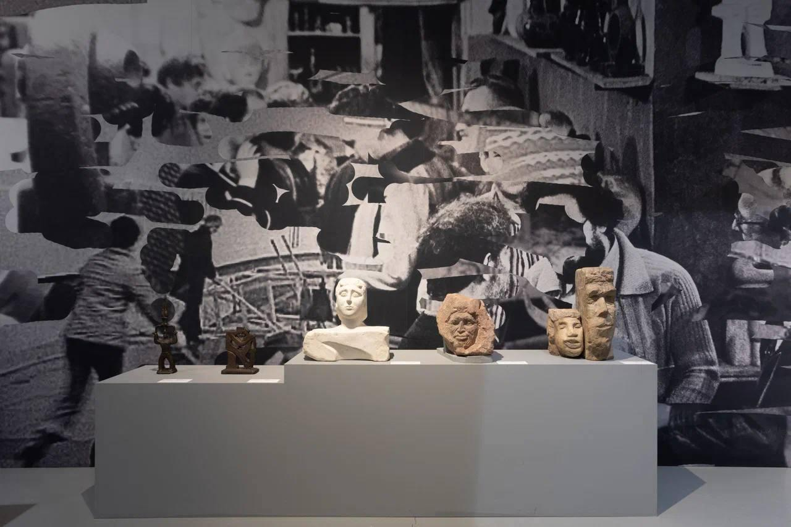